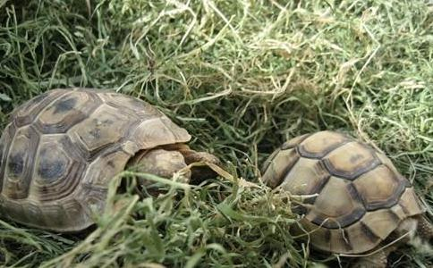

有了这些，大家
蚯蚓是喜温、喜湿、喜安静、怕光、怕盐、怕单宁味的夜行性环节动物。白天栖息在潮湿、 通气性能良好的土壤中。栖息深度一般为10～20厘米，夜晚出来活动觅食。
它以腐烂的落叶、枯草、蔬菜碎屑、 作物秸秆、禽畜粪、瓜果皮，造纸厂、酿酒厂或面粉厂的废渣以及居民点的生活垃圾为食。特别喜欢吃甜食，比如腐烂的水果，亦爱吃酸料，但不爱吃苦料和有单宁味的料，盐料对它有毒害作用。
蚯蚓是好气性的低等动物。对周围环境反应十分敏感，适于生活在15度～25度，湿度在60%～70%，酸碱度PH值为6.5～7.5的疏松土壤中，条件不适时，就会爬出逃走。
2、田螺的生活习性田螺是腹足类软体动物，喜栖息于冬暖夏凉、底质松软、饵料丰富、水质清新的水域中，特别喜集于有微流水之处。
田螺届杂食性，摄食水中的微生物和有机物或水生植物的幼嫩茎叶等。田螺喜夜间活动，夜间摄食旺盛。
3、蜈蚣的生活习性在自然条件下，蜈蚣白天一般栖息在山坡、田野、路边或杂草丛生的地方，或栖息并沿、柴堆以及瓦缝隙间，或阴暗的角落里。特别喜欢在阴湿、陈旧的地面，活动于腐殖质、石块、瓦砾之间。活动的基本特点是昼伏夜出。在温度低于10度时停食，零下7度进入冬眠期。
蜈蚣是典型的肉食动物，食性广杂，特别喜食各种昆虫及它们的卵、蛹、幼体等，同时还吃蠕虫、蚯蚓、蜗牛及各种畜禽、水产动物的肉、内脏、血、软骨等，也吃水果皮、土豆、
刺猬的适应性很强，对环境要求不严。但刺猬有喜静怕光，昼伏夜出的习性，内窝室为巢窝，铺放干草、松树叶或秸秆。外窝室为活动场所，包括土堆或山、花草、灌木等，以便夏季遮阴和冬季保暖。
刺猬为夜行性动物，傍晚前后一次性喂食瓜果蔬菜和清水即可。投喂的食品必须新鲜、干净，瓜果蔬菜要洗净后投喂。如从市场买来的瓜菜还要先放在水池内浸泡1 小时，再洗净配喂，以防农药中毒。
同时，饲料要品种多样化，饲料单一会引起刺猬间相互咬斗和拒食。
鹧鸪、鲫鱼、松鼠、蜗牛的生活习性
鹧鸪前额有一带状条纹，横过双眼，下行至颈部，形如护胸衣巾样，胸下部、背部多呈银灰色，翼上有多条黑色条纹，嘴、脚桔红色。体长约34-38cm，雄鸪体重550-650g，雌鸪400-550g。鹧鸪栖息于灌丛和疏树的低矮山谷内、或丘陵的石坡、沙坡上。鸣叫时常立于山巅树枝上，其鸣声特殊。
白天成群在灌丛中或窜到邻近庄稼地里觅食，其主食为植物种子、浆果、嫩枝叶、苔藓、地衣，兼食昆虫。4月末5月初开始繁殖，营巢于草丛或灌丛石堆中。
因为鹧鸪具有啄癖和相互啄食残杀习性，暂时喂养时应给以营养成分丰富，数量充足的饲料，并保证有足够长度的食槽和水槽；不要把病鸪或伤鸪与正常的放养在一起；除此之外，还要挂一些稻草或麦秆供应鹧鸪磨喙和去喙，防止鹧鸪之间发生相互啄食，甚至残杀。
鲫鱼是杂食性鱼，但成鱼主要以植物性食料为主。因为植物性饲料在水体中蕴藏丰富，品种每繁多，供采食的面广。维管束水草的茎，叶，芽和果实是鲫鱼爱食之物，在生有菱和藕的高等水生植物的水域，鲫鱼最能获得各种丰富的营养物质。硅藻和一些状藻类也是鲫鱼的食物，小虾，蚯蚓，幼螺，昆虫等它们也很爱吃。
鲫鱼采食时间，依季节不同而不同。春季为采食旺季，昼夜均在不断地采食；夏季采食时间为早，晚和夜间；秋季全天采食；冬季则在中午前后采食。
生活在江河流动水里的鲫鱼，喜欢群集而行。有时顺水，有时逆水，到水草丰茂的浅滩，河湾，沟汊，芦苇丛中寻食，产卵；遇到水流缓慢或静止不动，具有丰富饵料的场所，它们就暂栖息下来。
生活在湖泊和大型水库中的鲫鱼，也是择食而居。尤其在较浅的水生植物丛
生活在小型河流和池塘中的鲫鱼，它们是遇流即行，无流即止，择食而居。冬季多潜入水底深处越冬
松鼠为典型树栖鼠种，栖息于山地针叶林和针叶-阔叶混交林中，以树枝、苔薛和羽毛等为构巢物，在树枝间筑巢。巢呈圆形，出口开于背风面，但也有栖居于树窟内，也有的以旧的大鸟巢加以修补而成。松鼠每年可做几个巢、有主、副巢之分，副巢用于临时休息。雄鼠很少筑巢，大多利用旧巢。
松鼠以植物性食物为主，也取食昆虫及其幼虫、蚁卵、鸟卵及其他动物，但主要食物为落叶松等针叶林的种籽，夏季多取食各种浆果和
松鼠有贮藏食物的习惯。每当果实成熟的时候，经常可以看到它嘴里含着胡桃、橡实或者其他好吃的东西，每当它从一个树枝跳到另一个树枝的时候，贮备就会增加。
它不仅搜集胡桃和成熟的果实，而且还常常把磨菇挂在上面的树枝上，待风干后，收藏到仓库里。它确实具有一种高超的本领，即能找到合适的树枝，并把磨菇挂在上面，而且晒干后不会掉下来。在松鼠的仓库里，发现有胡桃和其他植物种子，但没有一个是腐烂的或生虫子的，质量全都很好。
松鼠的仓库很多，然而其中一些可能会遭受到风雨和冬季猛烈的暴风雪破坏，使其附近外貌形状被改变而再也无法找到。
这种小动物建造的球形巢的入口，可以从里面封闭起来，巢外大雨倾盆，寒风呼啸，大雪纷飞，挂满冰雪的大树被吹得吱吱作响，而它却安然躺在温暖的巢穴中并等待晴朗日子的到来。此时，它便去找自己的贮藏物，一旦找到便饱餐一顿。
如果没有暴风雪或雨，而且太阳照得比较暖和，它就会沿着树枝跳来跳去，进行游戏玩耍，这时那长长的尾巴使其跳跃的距离能达到10米远。当它感到疲劳时，就回到自己的窝里小想。
当夜晚刮起了暴风雪，树木又发出吱吱的响声时，它却在保温良好的巢中休息。树洞贮藏室和营巢毗邻的便利条件，使它冬天下会饿死和冻死，故不需要进行冬眠。
a、温度是影响其生长活动的重要因素，具有宜暖忌冷、热性的特点，这是由于遗传因素所决定的。
因为蜗牛是冷血动物，即变温动物，其体温随环境温度的变化而变化，所以温度对蜗牛的生长、繁殖显得尤为重要。蜗牛生长活动的最基本的温度要求是15—39度。最佳温度为25—35度，温度降至8度时，陆续进入休眠状态，0度以下有冻死的危险，当温度升至40度时，会导致夏眠。
b、蜗牛的生活习性，取决于适宜的温度和湿度。这是因为蜗牛的日常活动全凭自身分泌含水量较多的粘液，以保持身体湿润，另一方面又因为蜗牛是依靠外套膜呼吸空气，不能完全浸在水中生活，因此蜗牛形成了爱潮恶浸的习性。
c、强烈的光线刺激对蜗牛生长不利，蜗牛主要在夜间活动，害怕白天直射的阳光，喜欢栖息在阴暗潮湿的环境。蜗牛的视力很差而且反常，在强光下看的较近，只能看到6厘米以内的物体，在微弱的光线下看的反而较远，能看到20厘米以内的物体。
d、一般情况下，由于蜗牛害怕直射的阳光，而晚上温差小，空气湿度大，光线暗，不宜损失蜗牛体内的水分，所以一般在夜晚活动、采食。活动规律为下午6时左右开始活动，8—12时活动达到高峰，12时以后活动量逐渐减弱，直到次日早8时左右又基本完全停止活动，开始休息。
e、蜗牛在生长发育的过程中需要钻土，一是从土壤中汲取腐殖质、有机质、钙等营养物质；二是调节湿度；三是抵御敌害；四是产卵。
f、休眠是蜗牛抵抗
g、蜗牛为杂食性动物，一般以采食绿色植物的根、茎、叶、花、果实等为主，如
此外，它们还食取一部分沙粒和泥土，这是因为土中含有腐殖质的缘故。幼螺多摄食腐殖质和充分腐熟的植物落叶。[page]
黄鳝、福寿螺、河蚬、田螺的生活习性黄鳝为底栖生活鱼类，适应力强，在各种淡水水域几乎都能生存。湖汊、稻田、塘堰、沟渠、池沼、水库等静水水域中数量较多；水流较缓的溪流、江河缓流处亦有。但深水和流水的水域，却少有黄鳝定居。喜栖于腐质多的水底淤泥中，在水质偏酸的环境中也能很好生活。常钻入泥底或田堤，堤岩和水边乱石缝中孔隙内营居生活。洞穴深隧（洞长约为鱼体全长的2.45-3.65倍），结构较复杂（可分洞口、前洞、中间和后洞四部分），有的黄鳝洞穴有三个甚至多个洞口。黄鳝用头部穿泥土时，动作特别敏捷，瞬间即可钻进泥中。
黄鳝与蚯蚓穴泥土截然不同，蚯蚓是将穴内泥土逐渐排出洞外，而黄鳝是直接钻入，洞内土不向外排，所以，见其穴口大小，便知黄鳝有多大。
黄鳝栖息巢穴的深度，离地面约30厘米的地方。生活在稻田内的黄鳝，大多数栖息于离田基30厘米的范围内，孔道延伸至田基，只有极少数栖息在稻田的中间。孔道弯曲多而叉，每个栖息巢穴至少有两个出口，两个穴口通常相距60-100厘米左右，其中必有1个出入口在离水面的地点，一个作为避敌的退路，另一个则作为巢穴的通气孔。
黄鳝与其他鱼类相比，在历史进化上是较为突出的特殊鱼类之一。它的鳃已基本退化，鳃耙上仅留下一点点痕迹，很早以前已不能独立在水中呼吸了。而口腔、喉腔、肠道内壁表皮粘膜充满了毛细血管，可作辅助呼吸器官。它经常竖直前半段身体，吻端伸出水面能直接吸取自然界的新鲜空气。故在水中含氧十分贫乏时也能生活。出水后，只要保持皮肤的潮湿状，可不至死亡。（这对长途运输是十分有利的），黄鳝对光和味的剌激不大敏感。
黄鳝在水中经常抬着头吞入空气，目的是把新鲜的空气贮存在口腔的喉部，然后再逐渐把口腔的氧气与吻道壁间的气体进行交换。所以，鳝鱼平时的喉头特别大，一旦闷闭在水中时，喉表皮也能在水中呼吸。
鳝鱼在水中，头部若不伸出水面呼吸新鲜空气的话，即使水中溶氧十分丰富，也会引起它窒息而死亡。一般雄鳝将头伸出水面呼吸氧气的频率较高，雌鳝相对较低，小雌鳝甚至不到水面吞吐空气。因为，刚孵出的稚鳝具有胸鳍和鳍褶，鳍和鳍褶上面有许多毛细血管，卵黄囊上具有与水有很大接触面的血管网膜，这些血管网膜是这一时期的主要呼吸器官。稚鳝的胸鳍和鳍褶不停地经常扇动，在水中进行着气体交换，而不必将头伸出水面呼吸氧气。随着稚鳝的个体增大，卵黄囊、鳍褶和胸鳍逐渐退化泊失，而后主要靠口腔和喉部呼吸。
黄鳝是以肉食性饵料为主的杂食性鱼类，喜欢吃鲜活饵料，不吃腐烂变质的食物。在自然条件下，黄鳝主要以小鱼、小虾、昆虫、幼虫、小河蚌、小螺蛳以及水中枝角类、桡足类、轮虫类等大型浮游动物为食，同时吞食小蝌蚪、小青蛙，有时也摄取少量浮萍、茭瓜、丝状藻类、嫩水草和菜叶等。
人工喂养黄鳝，主要以蚯蚓、蚕蛹、小鱼虾、鲜鱼浆、蝇蛆、小蚌、螺肉、屠宰下脚料、各种动物内脏、配合饲料以及
人工饲料：黄鳝最好是将动物性饲料和植物性饲料粉碎后，按一定的比例，混合加工成颗粒饲料投喂。颗粒的大小，可根据黄鳝的大小来定，一般以一口能吞进去为宜。黄鳝在摄食旺季，摄食量很大，日摄食量可占体重的1/7左右。在饲料缺乏时，
黄鳝对饵料的选择性较为严格，如果长期投喂一种饵料，那么以后就很人工饲养黄鳝的初期，应在短期内加以驯饵，以便饲喂。
黄鳝昼伏夜出。白天很少活动，一般静卧于洞内，温暖季节的夜间活动频繁，出穴觅食，有时守候在洞口扑食，扑食后即缩回洞内，在炎热季节的白天也出洞呼吸与觅食，一到晚上，它就将头伸出洞口，出来寻找食物。
由于黄鳝视觉不太发达，眼睛高度近视，因而，在夜间光凭着视觉是很难发现食物的，故黄鳝在觅食时，主要依靠鼻孔内发达的嗅觉小褶，接收水中的各种生物饵料发散出来的微弱的化学分子气味，探测饵料生物藏身所在地。
平时，黄鳝在洞内将头部伸出洞口处，一旦有蝇蛆、蚯蚓、各种虫类从洞口露过，就立即张口，以缀吸或者吞食式把猎物吸吞下去。当捕到较大生物时，一般是猛一下咬住动物的头部，将其致死，或用旋转方式咬断生物，然后再把生物渐渐吃下，捕食后则立即缩回洞内休息。黄鳝还能在穿穴时摄食蜓蚓等土栖动物。
同时， 鳝鱼还有嗜食陆生动物的癖好，夜晚它常常游到近岸边甚至离水爬到岸上寻找食物吃，稚鳝最爱吃小型的甲壳类浮游生物。黄鳝内有忍耐饥饿的本领，一旦吃饱一餐，3一5天可不食饲料，也不致死亡。
摄食方式为口噬食及吞食，多以噬食为主，食物不经咀嚼咽下，遇大型食物时先咬住，并以旋转身体的办法，将捕食物一一咬断，然后吞食，摄食动作迅速，摄食后即以尾部迅速缩回原洞中。
性贪食，在夏季活动旺盛时，摄食量大，据报导，曾测定日食量约占体重的七分之一左右。
黄鳝比较耐饥饿，长期不吃食，不会死亡，但体重明显减轻
福寿螺喜阴湿，怕光线，适宜生长在水沟、浅水低洼地、鱼塘、稻田、水渠和人工建造的水泥池里。一般水渠50～100cm深为宜。要避免杂食性鱼类，如鲤鱼、罗非鱼、鲫鱼及其它野杂鱼吃掉小螺。另外，福寿螺的生存水质一定要保持清新。
该螺是一种偏植物性饵料的杂食性螺类，以植物性饵料为主，也摄食少量精饲料。15日龄以内的幼螺，消化系统不发达，食量也不大，主要摄食浮游生物和腐殖质，在此阶段以水质肥沃、浮游生物丰富为好；15日龄以后的幼螺和成螺，即可喂食
在适宜的水温条件下，福寿螺的食量很大，几乎整天都摄食，尤其是傍晚摄食量最大。
暂时喂养时，
一要每隔3~5天换水一次，保持水质清新；
二要防止农药、石油和石灰等碱性强的物质污染水质；
三要注意水温的变化，福寿螺最适宜的生长温度在２４～３２℃之间，当水温低于１０℃或高于４０℃时，在有条件的情况下，应及时采取保温与降温措施，谨防生长发育受到抑制。
河蚬在体外受精，卵发育成为面盘幼虫，在完成浮游生活阶段后，开始生长贝壳，并沉到池底，将壳体埋在池底淤泥中，只将吸管伸在水中进行呼吸，摄取饵料。放养河蚬的池塘，不能注入农药和化肥水，这最容易引起河蚬的死亡。水质也不宜过分肥沃。池的底质以砂土为宜。水深1米左右。暂时喂养时，应投喂豆粉、麦麸或米糠，也可施鸡粪或其它农家肥料。
河蚬也可与鲢、鳙、草鱼混养，但不能与青鱼、鲤鱼混养。
我国田螺科分田螺和圆田螺两个属：田螺属，其螺层不膨胀，而具有螺旋色带，如长旋田螺；圆田螺属，贝壳表面光滑，螺层膨胀，有中华圆田螺和中国圆田螺两种。目前在我国华北、黄河平原、长江流域一带觉的是中华圆田螺。
田螺可单养，也可与鲫鱼、泥鳅等混养；可在水稻田或休闲田中生存，也可在池塘或河沟中生存。田螺的最适生长温度为20~25度，在15度以下或30度以上时停止摄食活动，10度以下开始 入土冬眠，15度以上时开始繁殖，每只每次产小田螺约20~30个。
田螺的雌雄在外壳上很难识别，主要根据触角识别，雄田螺的右触角呈一定程度 的螺旋状弯曲（此触角兼作交接用），而雌田螺左右两触角形状完全相同。
田螺疾病较少，成活率高，田螺对氧较敏感，含氧量低于3.5毫克/升时摄食不良，1.5毫克/升时开始死亡。
田螺食性很广，暂时喂养时，可投喂米糠、菜叶、鱼粉等，也可投喂人工配合饲料。
鳖（甲鱼）、泥鳅、青虾、龙虾、牛蛙、塘角鱼、河蟹的生活习性
鳖（甲鱼）是变形动物水陆两栖，用肺呼吸，鳖无鳃，出水爬行用肺呼吸，有鼻孔、气管、支气管和肺等完善的呼吸系统。肺大而多泡，海绵状，对水中生活十分适应。
鳖的咽壁粘膜上也布满了用于水中气体交换的毛细血管，随着水流从口中的吞吐，也可进行水中气体交换。所以，鳖在冬眠期潜栖水底泥沙中，只把嘴尖和管状鼻孔伸到贴近水底的泥沙表面，即可吸收水中的溶氧以维持生命。由于鳖具有以上特殊器官，所以它能较长时间潜栖水底。
在温暖地区的水系，鳖的生长期很长；在北方地区，每逢北风呼啸霜铺地、草衰苇败绿水寒的季节，鳖潜伏水底泥沙中冬眠，不吃也不动。
鳖平时潜栖在水底泥沙上，头颈藏在体内，双目炯炯窥视水底世界，当鱼虾等游到它的身边时，则突然伸颈袭击，一口咬住不放。
在晚春、炎夏和初秋季节，波平浪暖，绿菌铺地，它们常常爬到岸边晒太阳。在风平浪静的炎夏中午前后，常浮到水面，把管状的鼻子伸到水外呼吸空气。稍有风吹草动，立即潜入水中。
在温暖季节，每到气压低的阴雨天，鳖也纷纷游到水面呼吸，有时全身露出水面。尤其在阴云密布、大雨滂沱、江河涨水、惊涛拍岸时，常有几十公斤的老鳖探颈张望。
鳖的生活习性可归纳为“三喜三怕”即喜静怕惊，喜阳怕风，喜洁怕脏。对周围环境的声响反应灵敏，只要周围稍有动静，鳖即可迅速潜入水底淤泥中，所以养鳖场或养鳖池地环境一定要保持安静。鳖如果经常受到惊吓，对其生长繁植都是很不利的。
鳖是以肉食为主的杂食性动物。主要食物为小鱼、小虾、螺、蚌、水生昆虫、蚯蚓、动物内赃等。 同时也兼食蔬菜、草类、瓜果等。在食物不足时，同类可互相残食。
所以，在饲养时，一定要大小分类，切不可不同规格的鳖混养在同一池中，以免互相残杀，造成损失。鳖既贪食又耐饿，一次吃后很长时间不吃东西，也不会死亡。当然，这是靠它自身积蓄的营养来维持生命活动的。
鳖是一种变温动物，对周围温度的变化非常敏感。当外界温度降至15℃以下时，鳖就开始停食，潜伏在水底泥沙中冬眠（一般为10月至翌年4月），冬眠期长达半年之久。因此，在自然条件下养鳖，生长缓慢，一般一年只长100克左右。
泥鳅营底本生活喜生活于淤泥较厚的静水中。栖息于稻田、池塘，湖沼和江河等有软泥的地方。由于生活于光线较差的淤泥中，眼睛退化，只有靠触须来寻找食物。
泥鳅可生活在溶氧极小的水或淤泥中，除进行鳃呼吸外，还可用皮肤和肠直接从空气中吸取氧气。当水温高、气压低或密度过大、水中溶氧不足时，可跃出水面吞吸空气，行肠管呼吸。
泥鳅的适宜生活水温为20-30℃。当水温过高或过低，以及天旱水浅时，往往潜入泥层度过不良环境。通常除遇到缺氧、染病和气候恶劣等原因外，几乎不到水的中、上层活动、冬季池水干涸时，钻入软泥中，靠少量水分保持皮肤湿润，并行肠呼吸维持生命。
泥鳅是杂食性鱼类。主要食物是小型甲壳动物、昆虫幼体、水丝蚓、藻类以及高等植物碎屑、水底腐植质等。幼体阶段捕食动物料，然后转为杂食性，成鳅以摄食植物性饵料为主。水温在15℃以上时，食欲逐渐增加，上升到25-27℃时食欲特别旺盛，生长迅速。一旦超过32℃，食欲则减退。平时多在夜间摄食，生殖期间则在白天，而且雌鱼摄食明显增加。
青虾生活在淡水，且能适应低盐度的水域。水质要求中性或偏碱性。青虾在水温上升时，在沿塘边、河岸浅水处活动，秋冬季向深水处移动，由于深水的溶氧、饵料生物条件的影响，青虾很少进入池塘中心的深水水域。青虾适应的潜伏深度为1-1.5米。
青虾的游动能力较弱，通常是在塘底和水草丛中攀缘爬行。白天喜隐蔽，晚上出来活动觅食。越冬期间则潜伏于水底的石砾、泥穴、树枝或草丛中，清明前后出来活动。
青虾是以动物性食物为主的杂食性动物。不同的发育阶段食性不同。幼体孵出后，从第一次蜕皮到第八、九次蜕皮的阶段为幼体发育期，总的时间为20-30天（即每年5月-6月），平均每1-3天蜕皮1次，每蜕一次皮，虾体即长大一次。
这一阶段的食物，主要是有机碎屑和单细胞藻类，特别是藻中的丝状藻，鼓藻和硅藻中的固着性藻类，其他还包括水中的无节幼体和昆虫幼虫等，或人工投喂的蛋黄和
仔虾阶段后为幼虾阶段（变态结束到性成熟前），生活习性转入底栖。每隔7-11天蜕皮1次，这一阶段为35-45天。
这一阶段的食物主要是小型的水生昆虫、蠕虫、动物尸体等，也喜食人工投喂的轧碎贝类、鱼虾、蚕蛹等动物性饲料及豆饼、米糠、水草、菜叶等植物性饲料，包括鱼粉、蝗蚓、蝇蛆、小蛤等，植物性饲料则包括豆饼、
青虾贪食，生长快，适口的饲料投入后，2-3分钟即能充满全胃，但总的摄食强度取决于水温。一般3月份，当水温达14℃时即开始摄食，4-10月摄食强度最大，12月进入越冬阶段，即很少摄食，只在气温回升时少量摄食。[page]
红螯螯虾的生理适应性较强，包括耐低氧和耐高温，卵和幼体除外。栖息的水体为河流、湖泊、水库和池塘。白天潜伏在水体可陷蔽的地方，傍晚和黎明前出来觅食，喜夜晚活动，营底栖爬行生活，喜群居。交配季节所有的虾白天都显得十分活跃。
试验证明，红螯螯虾能够在水温11℃的条件下生存，在水温5℃的条件下存活3周，但如长期生活在水温为9℃的条件下，会产生大量死亡。该虾在不利的生活条件下会打洞，据观察，在较软的池底泥中越冬过程中，这种虾会打洞。
红螯螯虾耐低溶氧能力较强，如水中溶氧量为1毫克/升时仍能生存，在潮湿微水状态下，亦能存活较长时间，在养殖或越冬过程中，常发现红螯螯虾出现在堤埂上。幼体和怀卵虾则不宜在低溶氧中，否则会导致幼体和卵胚的死亡。故在养殖过程中，溶氧一般不应低于4毫克/升，在孵化过程中溶氧量还应高一些。
红螯螯虾为杂食性动物，在天然条件下，主要摄食有机碎屑、水生藻类、丝状藻类、水生植物的根、叶及碎片，特别喜食汁多肥嫩的绿色植物如水浮莲、水葫芦、马来眼子菜、绿萍和苦草等。动物性食物喜食水蚯蚓、蚯蚓、水生昆虫卵、蛹、螺、蚌和鱼肉等。人工饲养中，适量投喂市售的配合饲料均可摄食。
红螯螯虾从稚虾生长到成虾的整个生长过程中将发生多次蜕皮。在适宜的环境条件下，刚孵出的稚虾，每次蜕壳的时间间隔较短，在1-2天蜕壳1次，随着身体的长大，蜕壳间隔的时间也就延长。
在蜕壳期间，该虾最容易受敌害生物或同类侵食，是该虾引起死亡的危险期，若在此期间人为捕捉、搬动、水质差或缺氧则易于死亡。
牛蛙属变温动物，一生经过产卵，卵孵为蝌蚪，生活于水中，后经完全变态成为幼蛙，开始两栖生活。牛哇喜栖于沟塘边，若水面长有浮水植物，则伏于水上，将头露出水面，遇惊扰便潜入水中。牛蛙常常是几只或几十只群居共栖，在适应环境后，一般不再迁移。
每年4月-9月，牛蛙开始抱对产卵，受精卵3-4天孵化为蝌蚪，生活在水中，用鳃呼吸。成为为幼蛙后，过着水陆两栖生活。冬季水温降到10℃以下时，牛蛙躲藏于洞穴或淤泥中，进入冬眠。待气温回升到10℃以上，又出来觅食。
牛蛙是变温动物，它的体温随外界温度变化而改变。在自然条件下，蝌蚪的生存的 水温为2-35℃；最适于生长发育的水温为23-25℃；水温超过35℃蝌蚪便陆续死亡，温度低 于15℃时、蝌蚪不摄食；水温低于9℃时便进入冬眠状态。成蛙摄食、生长的适宜温度为2 0-30℃，最适温度为25-30℃。
秋季水温降至18℃以下时，食欲与活动减弱；15℃以下停止 摄食；9-10℃开始冬眠。当水温超过32℃时，活动和摄食明显减弱，水温超过35℃时，牛蛙 陆续死亡。
牛蛙皮肤没有防止水份蒸发的保护组织，因此不能长时间离开水，在干燥的空气中或日晒过 久均能造成牛蛙死亡。皮肤的温度直接影响牛蛙的生殖、排卵，蝌蚪的生长、发育需在水中 进行，因此水是牛蛙不能缺少的生态需要。牛蛙一般具畏光性，昼伏夜出，喜欢栖息在有利于生长发育和繁殖的向阳环境。但避免阳光 直接照射，喜欢弱光，更喜欢蓝光。
牛蛙蝌蚪以有机屑及浮游动物等为食，幼蛙和成蛙以某些水生和陆生动物为食。捕食时，选择安全、僻静和饵料丰富的浅水处，或陆地上，耐心等待，当发现被捕食对象活物时，则以猛扑的方式跳跃捕捉。在离蛙较远时，则轻轻爬向目标，伺机捕捉。在饵料缺乏时，牛蛙有大吃小的现象。
塘角鱼也叫革胡子鲶：头部扁平，头后侧扁，鱼体光滑无鳞。体色深灰色或黑色，体两侧具有灰黑色蚀状斑块，胸腹部白色。口宽、横裂、齿利，口稍下，有触须4对，上下吻各2对。上下颌和犁骨上密生绒毛状细齿。
原产非洲尼罗河流域，喜温怕寒，适宜生长和水温为18-32℃最适宜生长的水温为22-32℃，15℃以下摄食量很少，生长慢。当水汩降至临界7℃时则会冻死。
生活在水的下层，夜间活动敏捷，摄食旺盛。由于革胡子鲶鱼具有树枝状（又称珊瑚状）的鳃上呼吸辅助器官和皮肤呼吸功能，能够生存于一般鱼类不能生存的低氧或浅水和污染的水域中，只要其体表保持湿润，离开水几天仍能生存。由于革胡子鲶的胸鳍外缘有一根坚硬粗壮的硬刺，能在陆地上爬行，它能越过障碍物，从一个鱼池迁移到另一个鱼池。它的四对口须颇长，且能灵活转动。
革胡子鲶是以动物为主的杂食性鱼类。贪食，且一次吃饱，具有群聚争食的习性。
自然生长的河蟹一般是穴居或隐居。在食物丰盛、饱食时，它们为躲避敌害，常常营穴居生活。没有穴居条件时，它们便躲在石砾或草丛中隐居。河蟹通常喜欢生活在水质清洁、水草丰盛的江河湖泊中，在池塘中时，它们常隐伏在池底的淤泥中。河蟹昼伏夜出，在饵料丰富，环境适宜时安于定居，一旦成熟，便弃穴离去。
河蟹在淡水中生长，在海水中繁殖。蟹苗进入淡水后，一般在饵料丰足的河湾、湖泊中生活18个月左右，性腺逐渐成熟。成熟的河蟹在秋末冬初开始到海淡水混合的近海区产卵，这就是生殖洄游。交配后的雌蟹不久便可产卵，卵一串串贴附在雌解的腹肢毛上，堆积在腹部，直到孵出幼体。这类蟹称“抱卵蟹”。河蟹一次可产数万至百万粒卵，并且能产2-3次。
在自然界受精卵要经过4个月才能出苗，孵化率可达90%左右。刚孵出的幼体很小，形状像水蚤，称蚤状幼体。蚤状幼体经过五次蜕皮，大约35天就长成蟹苗（大眼幼体），蟹苗再蜕一次皮，成幼蟹。刚脱壳的蟹称软壳蟹，它无力摄食和防敌，1-2天后壳才渐硬，这时才渐渐活动，脱壳后蟹体显著增大。河蟹繁殖后，身体很快便衰老、死亡。
河蟹的食性很杂，它荤素均吃，并且喜欢吃鱼、虾、螺、蠕虫、蚯蚓、昆虫及其幼早等动物性食物，也残食受伤或刚蜕壳的同类，抱卵蟹在饥饿时还取卵当食。在自然环境中河蟹容易得到的多为水草，所以植物食性为主。
河蟹十分贪食，食量也大，消化能力很强。在食物丰富时可以吃得很多，而没有食物时，几天甚至一个月不吃，也不至饿死，这是因为在饱食后，会把多余的营养贮存在肝脏中，刚脱壳的“软壳蟹”就是预先贮存的营养来维持生命的。在穴洞里越冬期间，才停止或减少摄食。
河蟹不仅贪食，而且有抢食好斗的习性。为了争抢一顿美餐，经常会互相残杀。
乌鱼、鲫鱼、罗非鱼、鲢鱼、鲤鱼的生活习性
又称乌鳢、黑鱼、财鱼、生鱼、乌鱼、乌棒、蛇头鱼、黑鱼棒子、斑鱼、草鳢等。体延长，前部圆筒形，后部侧扁。头较长，前部扁平，后部隆起，头上被有小细鳞，颇以蛇头。口大，端位，具有尖锐的牙齿，口裂后端延伸至眼后缘。眼小，位于口的前上方。背鳍和臀鳍较长，可达尾柄基部，尾鳍圆形。体被圆鳞，侧线完全。全身青褐色，头民、背色较深暗，腹部较淡。体侧有许多不规则的黑色斑块，头侧有两纵行黑色条纹。背鳍、臀鳍、尾鳍均有黑色斑纹。胸鳍、腹鳍浅黄色，胸鳍基部有一黑色斑块。
乌鳢喜栖息于水草丛生、淤泥底质的湖泊、水库、河流、河沟及池塘，内外荡等水体中。平常潜伏在水草茂密的水底，捕食或水中缺氧时才到水体中上层活动。对环境适应能力强，有辅助呼吸器官可直接呼吸空气中的氧。故耐低氧，在少水或潮湿的地带也能长时间生存。生存水温0-41℃，适宜生长温度为16-30℃。遇有适害时，可以潜伏于底泥中。能在水面跳跃，同时发出钝音。可随细小水
乌鳢是典型的肉食性鱼类，食性随鱼体大小而变化，
10厘米以下的幼鱼主要以桡足类、枝类、水生昆虫、仔鱼、小虾为食；成鱼则以各种小型野杂鱼为食，主要有鲫鱼、餐条、泥鳅等。
乌鳢的性成熟年龄一般为2龄，体重在500克能上能下，怀卵量约为2万粒。5-7月为产卵期，以6月较为集中。产卵方式为筑巢类型，是属一次成熟、分批产卵，卵为金黄色的浮性卵。
鲫鱼又叫河鲫、鲫瓜子。体侧扁而高，腹部圆，头较小，吻钝，口端位呈弧型；眼较大，无须；体呈银灰色，背部较暗，鳍灰。因生存的环境不同，形体与颜色也有所差异。其肉质鲜美，营养丰富。饵鱼是一种中小型淡水鱼，也是内陆江河湖塘分布最广的野生鱼种，家养的很少。它的个体较小，一般250克以上就算大鲫鱼了，超过1000克的数量不是很多。但在多年少有人捕钓的水域中，最大个体可达3000克。
鲫鱼的家族成员广，有银灰鲫鱼、银鲫鱼、百鲫鱼、彩色鲫鱼、金鲫鱼、乌鲫鱼等多个品种。它分布广泛，是垂钓的主要鱼种之一，一年四季均可垂钓。
（1）栖息于水的下层，鲫鱼是底栖性鱼类，经常栖息在杂草丛生的水域，游弋到有腐殖质的水底觅食。
（2）喜欢清洁水域和水草，清洁水域溶氧充足，且微生物等杂物少，水质不污染，鱼儿在这样的水域里游动觅食有舒适感，食欲旺。水草丛生处有饵鱼爱吃的食物，且隐蔽性强，鱼有安全感。同时水草还是鱼儿产卵繁殖的天然产床。
（3）文静而胆小，胆小是鱼类的共性，而卿鱼尤其胆小，害怕惊扰。大鲫鱼更甚。
鲫鱼性情温顺、文静，警觉性很高。见到食物，并不马上吞食，而是慢慢靠近，在周围转着圈观察一番，然后才慢慢腾腾地用口轻啄饵食，边吞边吐，反复几次。有时还先用身子蹭一蹭，或用尾巴扇一扇，不肯轻易吞下。鱼群中如果某一同伙被钓走，便立刻逃之夭夭，过一段时间才又小心翼翼地游回来。如若有人往水里扔石块，或是岸边大声喧哗，响动较大，便潜入水底不动。
（4）食性杂，四季寻食，鲫鱼食性较杂，荤素都吃，以荤为主。同时喜吃植物性饵料，也吃有机碎屑及底栖小动物。蚯蚓、蛆、虾、面食、饭粒、薯类都喜欢吃。而且一年四季，只要水温适宜，随时都在觅食。
当然鲫鱼也有个换口味的习惯，一般是春秋二季喜吃荤饵，夏季喜吃素饵，深秋以后则荤素兼食。不过平时垂钓，也应注意荤素饵的更换，或是交替使用。例如用荤饵钓了一段时间，鱼不大贪嘴了，不妨改钓素饵。反之亦然。
（5）喜温暖，惧酷热，怕强光，鲫鱼是广温性鱼类，适合鲤鱼生存的最佳温度是15℃~25℃，在这个温度范围内，鲫鱼的活动能力最强，食欲旺盛。
春秋之季，鲫鱼喜欢到岸边浅水区域，尤其是水草繁密的地段游戈、觅食；炎热的夏天，浅水区水温被晒得很高，鲤鱼便潜入深水处栖息，或到荫凉处“乘凉”；到了严寒的冬季，便游进深水域避寒去了。鲫鱼最惧怕强光照射，很少到水面晒太阳。
（6）喜活水，喜风，鱼类绝大多数都喜欢活水。这是因为活水不仅带来了充足的氧气，还往往夹带着鱼儿爱吃的杂物，同时还会对鱼儿生活的水域起到调节温度的作用。
对于鲫鱼来说，尤其喜欢从外部注入的新鲜水（包括涨水和下雨），因为这能给胆小而好动的鲫鱼提供了“天赐良机”。鲫鱼喜风，刮三四级风的天气，表现异常活跃。
（7）喜欢群集，鲫鱼生性喜欢群集，且多是个体大小相近的聚集在一起，形体相差悬殊的元缘相聚。所以，垂钓的人往往能在某个窝点接连钓上很多条鲫鱼，而且个体大小相差不多。
（放生鲫鱼，应回避钓鱼者聚集之地）
(生长缓慢，饵鱼生长速度较慢，当年鱼也就是长到100克左右。正因为这样，鲫鱼绝大多数都属野生，很少有放养的。
（9）数量多，游速慢，上钩后逃窜力不大。
（10）繁殖能力强，鲫鱼的性腺较其他鱼成熟得早，隔年鱼便能产卵，一边产卵一边长个头；而且产卵期长，从春季一直可持续到秋季，产卵数量多，卵产在浅水域的水草或其他物体上。鲫鱼繁殖能力强是它分布广、数量多的一个重要原因。还有一点，鲫鱼产卵期间照样觅食，这与其它鱼类是不同的。
（11）生命力极强，鲫鱼的耐受力特好，生命力极强，不易死亡。即使水域环境很恶劣，只要有水，没有毒质污染，就能存活和繁衍后代。
经常有这样的情况，某个养鱼塘的水已被抽干，但当有了水之后，又有鲫鱼出现，这是鲫鱼原先产下的卵埋人湿土中了，当有水之后，经过阳光照射，便孵化成小鱼的缘故。有的水域被轻度污染后，其他鱼几乎都死光了，但饵鱼却不会绝迹，仍可钓到。
乌鱼、鲫鱼、罗非鱼、鲢鱼、鲤鱼的生活习性
又称乌鳢、黑鱼、财鱼、生鱼、乌鱼、乌棒、蛇头鱼、黑鱼棒子、斑鱼、草鳢等。体延长，前部圆筒形，后部侧扁。头较长，前部扁平，后部隆起，头上被有小细鳞，颇以蛇头。口大，端位，具有尖锐的牙齿，口裂后端延伸至眼后缘。眼小，位于口的前上方。背鳍和臀鳍较长，可达尾柄基部，尾鳍圆形。体被圆鳞，侧线完全。全身青褐色，头民、背色较深暗，腹部较淡。体侧有许多不规则的黑色斑块，头侧有两纵行黑色条纹。背鳍、臀鳍、尾鳍均有黑色斑纹。胸鳍、腹鳍浅黄色，胸鳍基部有一黑色斑块。
乌鳢喜栖息于水草丛生、淤泥底质的湖泊、水库、河流、河沟及池塘，内外荡等水体中。平常潜伏在水草茂密的水底，捕食或水中缺氧时才到水体中上层活动。对环境适应能力强，有辅助呼吸器官可直接呼吸空气中的氧。故耐低氧，在少水或潮湿的地带也能长时间生存。生存水温0-41℃，适宜生长温度为16-30℃。遇有适害时，可以潜伏于底泥中。能在水面跳跃，同时发出钝音。可随细小水流转移水域中，在少水的潮湿淤泥地带也能生活相当长时间。冬季常进行穴居生活，潜伏于泥中停食不动。
乌鳢是典型的肉食性鱼类，食性随鱼体大小而变化，
10厘米以下的幼鱼主要以桡足类、枝类、水生昆虫、仔鱼、小虾为食；成鱼则以各种小型野杂鱼为食，主要有鲫鱼、餐条、泥鳅等。
乌鳢的性成熟年龄一般为2龄，体重在500克能上能下，怀卵量约为2万粒。5-7月为产卵期，以6月较为集中。产卵方式为筑巢类型，是属一次成熟、分批产卵，卵为金黄色的浮性卵。[page]
鲫鱼又叫河鲫、鲫瓜子。体侧扁而高，腹部圆，头较小，吻钝，口端位呈弧型；眼较大，无须；体呈银灰色，背部较暗，鳍灰。因生存的环境不同，形体与颜色也有所差异。其肉质鲜美，营养丰富。饵鱼是一种中小型淡水鱼，也是内陆江河湖塘分布最广的野生鱼种，家养的很少。它的个体较小，一般250克以上就算大鲫鱼了，超过1000克的数量不是很多。但在多年少有人捕钓的水域中，最大个体可达3000克。
鲫鱼的家族成员广，有银灰鲫鱼、银鲫鱼、百鲫鱼、彩色鲫鱼、金鲫鱼、乌鲫鱼等多个品种。它分布广泛，是垂钓的主要鱼种之一，一年四季均可垂钓。
（1）栖息于水的下层，鲫鱼是底栖性鱼类，经常栖息在杂草丛生的水域，游弋到有腐殖质的水底觅食。
（2）喜欢清洁水域和水草，清洁水域溶氧充足，且微生物等杂物少，水质不污染，鱼儿在这样的水域里游动觅食有舒适感，食欲旺。水草丛生处有饵鱼爱吃的食物，且隐蔽性强，鱼有安全感。同时水草还是鱼儿产卵繁殖的天然产床。
（3）文静而胆小，胆小是鱼类的共性，而卿鱼尤其胆小，害怕惊扰。大鲫鱼更甚。
鲫鱼性情温顺、文静，警觉性很高。见到食物，并不马上吞食，而是慢慢靠近，在周围转着圈观察一番，然后才慢慢腾腾地用口轻啄饵食，边吞边吐，反复几次。有时还先用身子蹭一蹭，或用尾巴扇一扇，不肯轻易吞下。鱼群中如果某一同伙被钓走，便立刻逃之夭夭，过一段时间才又小心翼翼地游回来。如若有人往水里扔石块，或是岸边大声喧哗，响动较大，便潜入水底不动。
（4）食性杂，四季寻食，鲫鱼食性较杂，荤素都吃，以荤为主。同时喜吃植物性饵料，也吃有机碎屑及底栖小动物。蚯蚓、蛆、虾、面食、饭粒、薯类都喜欢吃。而且一年四季，只要水温适宜，随时都在觅食。
当然鲫鱼也有个换口味的习惯，一般是春秋二季喜吃荤饵，夏季喜吃素饵，深秋以后则荤素兼食。不过平时垂钓，也应注意荤素饵的更换，或是交替使用。例如用荤饵钓了一段时间，鱼不大贪嘴了，不妨改钓素饵。反之亦然。
（5）喜温暖，惧酷热，怕强光，鲫鱼是广温性鱼类，适合鲤鱼生存的最佳温度是15℃~25℃，在这个温度范围内，鲫鱼的活动能力最强，食欲旺盛。
春秋之季，鲫鱼喜欢到岸边浅水区域，尤其是水草繁密的地段游戈、觅食；炎热的夏天，浅水区水温被晒得很高，鲤鱼便潜入深水处栖息，或到荫凉处“乘凉”；到了严寒的冬季，便游进深水域避寒去了。鲫鱼最惧怕强光照射，很少到水面晒太阳。
（6）喜活水，喜风，鱼类绝大多数都喜欢活水。这是因为活水不仅带来了充足的氧气，还往往夹带着鱼儿爱吃的杂物，同时还会对鱼儿生活的水域起到调节温度的作用。
对于鲫鱼来说，尤其喜欢从外部注入的新鲜水（包括涨水和下雨），因为这能给胆小而好动的鲫鱼提供了“天赐良机”。鲫鱼喜风，刮三四级风的天气，表现异常活跃。
（7）喜欢群集，鲫鱼生性喜欢群集，且多是个体大小相近的聚集在一起，形体相差悬殊的元缘相聚。所以，垂钓的人往往能在某个窝点接连钓上很多条鲫鱼，而且个体大小相差不多。
（放生鲫鱼，应回避钓鱼者聚集之地）
(生长缓慢，饵鱼生长速度较慢，当年鱼也就是长到100克左右。正因为这样，鲫鱼绝大多数都属野生，很少有放养的。
（9）数量多，游速慢，上钩后逃窜力不大。
（10）繁殖能力强，鲫鱼的性腺较其他鱼成熟得早，隔年鱼便能产卵，一边产卵一边长个头；而且产卵期长，从春季一直可持续到秋季，产卵数量多，卵产在浅水域的水草或其他物体上。鲫鱼繁殖能力强是它分布广、数量多的一个重要原因。还有一点，鲫鱼产卵期间照样觅食，这与其它鱼类是不同的。
（11）生命力极强，鲫鱼的耐受力特好，生命力极强，不易死亡。即使水域环境很恶劣，只要有水，没有毒质污染，就能存活和繁衍后代。
经常有这样的情况，某个养鱼塘的水已被抽干，但当有了水之后，又有鲫鱼出现，这是鲫鱼原先产下的卵埋人湿土中了，当有水之后，经过阳光照射，便孵化成小鱼的缘故。有的水域被轻度污染后，其他鱼几乎都死光了，但饵鱼却不会绝迹，仍可钓到。
罗非鱼，又叫非洲鲫鱼，体形很像鲫鱼。体色灰褐，背鳍发达，背较厚，体短而高，肉厚且鲜嫩。它适应性强，产量高，已成为我国南方各省广泛养殖的鱼种之一。近年来，北方某些地区，也开始人工饲养。
（1）罗非鱼属杂食性。幼鱼主要食浮游动物和藻类，成鱼则以植物性食料为主。对蚯蚓、小虾、蚂蚱、红虫、蟋蟀、桑蚕等活饵都很爱吃；人工喂养的饲料主要是由玉米面、麦麸、豆饼、鱼粉等混合制成。
（2）食量大，贪吃好钓。比较呆傻，上钩后不易脱钩，生手也能钓着，不用担心“剃光头”。
（3）喜温惧寒。最适宜生存的水温是20℃~35℃，低于8℃便会死亡。繁殖水温必须在20℃以上。
（4）繁殖力强。水温条件适宜，每年可产卵5~8次，而且是雌鱼用口孵化，每次少则几十粒，多则几百粒，成活率百分之百。雌鱼在孵化期间（大约两周左右），停止摄食。
（5）生长快，产量高。6个月鱼可长到250~350克左右，当年可长到400~500克。罗非鱼属淡水小型鱼种，最大个体可达2千克。这种鱼适合我国南方地区饲养。北方地区，罗非鱼只能是当年饲养当年清塘，不越冬
（6）适应能力强，很少有疾病。其忍受力和耐低氧的能力超过其它鱼。对水域环境要求不高，即便是在污水中也能存活。
（7）属于下层鱼，早晚栖息于水体下层，其他时间多在中层或中上层活动。盛夏季节食欲旺盛，也最肥壮。
（8）“老实憨厚”。耐干扰不易受惊，岸上人说话走动有声响，基本不影响就饵。喜欢成群抢食，一点不滑头。
是淡水鱼中最容易被上钓的一种鱼。（放生须严防）
鲢鱼又名白鲢、水鲢、跳鲢、鲢子。体侧扁、稍高，呈纺锤形，头大吻短，口宽、眼小，鳞很细，体呈银白色，腹部有肉棱。鲢鱼是人工饲养的大型淡水鱼，生长快、疾病少、产量高，多与草鱼、鲤鱼混养。
（1）鲢鱼属中上层鱼。春夏秋三季，绝大多数时间在水域的中上层游动觅食，冬季则潜至深水越冬。
（2）属于滤食性鱼类。主要食物：鲢鱼终生以浮游生物为食，并喜吃草鱼的粪便和投放的鸡、牛粪。对酸味食物很感兴趣，对糟食也很有胃口。鲢鱼的饵食有明显的季节性。春秋除浮游生物外，还大量地吃腐屑类饵料；夏季水位越低，其摄食量越大；冬季越冬少吃少动。
（3）食欲与水温成正比。鲢鱼喜高温，最适宜的水温为23℃~32℃。炎热的夏季，鲢鱼的食欲最为旺盛。
（4）性情活泼，喜欢跳跃，有逆流而上的习性，但行动不是很敏捷，比较笨拙。鲢鱼喜肥水，个体相仿者常常聚集群游至水域的中上层，特别是水质较肥的明水区。
（5）胆子小怕惊扰。当受到惊扰或碰到网线时，便纷纷跳出水面越网而逃。
（6）生长速度快、产量高。每年4~5月产卵，当年鱼可长到500~800克，三龄鱼体重可达3~4千克，最大个体可达到30千克。
（7）耐低氧能力极差，水中缺氧马上浮头，有的很快便死亡。
鲤鱼又叫鲤拐子、黄河鲤鱼等，种类繁多。体形呈纺锤形，侧扁，吻长而坚硬；眼小鳞大，有两对须；尾鳍下部为红色，体侧两面近金黄色，背部鳍硬刺，微黑。属大型淡水鱼种之一。分布范围广，江河、湖泊、水库、沟塘，到处都有它的踪迹，是我国淡水鱼中产量最高的鱼种，也是垂钓的主要对象。
（1）属底层鱼。栖息于水域的松软底层和水草丛生处，喜欢在有腐殖质的泥层中寻找食物。早晚风平浪静时，也常到岸边浅水区游弋觅食。
（2）食性杂，荤素皆吃，以荤为主。幼鱼期主要吃浮游生物，成鱼则以底栖动物为主要食物。小鱼、小虾、红虫、俎虫、螺肉、水蚯蚓以及藻类果实等，都是它的美味佳肴。尤其喜吃红蚯蚓和薯类，对有香味的甜面饵特别感兴趣。随着气候和水温的变化，其摄食口味也会发生某些改变，有时有明显的选择性。鲤鱼的吻部长而坚，伸缩性强，吃饵常常翻泥打洞，有点像猪拱食，并随之泛起气泡。在鱼塘抽水干枯后，可以看到塘底和岸边那无数的圆形坑窝和孔洞，便是鲤鱼所为。
（3）喜弱光，喜活水。鲤鱼喜欢在水色比较暗褐、透明度较低的水域中生活，阴天时比晴天时活跃。特别喜欢在有新水注入的流水口处游弋和觅食。
（4）机警聪明。鲤鱼较比其他鱼类要聪明机警得多，素有“鬼子鲤”之称。鲤鱼上钓后，为逃避“灭顶之灾”，会使出浑身解数与人对抗。如在水底原地不动“打桩”。躲进障碍物或草丛之中等等，有时甚至能够制造某种假象来迷惑你。鲤鱼胆小，一有动静便立即逃窜。
（5）生长快，
鲤鱼的寿命比较长，一生能活四五十年，素有鱼中“老寿星”之称。
（6）摄食量与水温关系密切。水温是决定鲤鱼食欲的关键因素。水温20℃~25℃时，食欲最旺，从早至晚不停地摄食，上钩率最高；水温低于10℃，活动量很小，基本上不进食；水温在2℃以下时，躲进深水处越冬，不吃不动。
（7）生性好动，到处游弋觅食，有逆水而上的习性。在一个地方呆不了多长时间，爱跃出水面蹦跳。鲤鱼虽好动，但较孤僻，不大合群。大鲤鱼喜欢单独行动。
(适应能力强，能耐寒、耐碱、耐低氧，对水体要求不高，能在各种水体中生活，只要水域没有被污染，就能生存。
（9）繁殖力强。两冬龄鲤鱼便开始产卵，产卵数量大。在我国北方，每年的五月上旬至中旬（长江以南地区早些），雄雌鲤鱼相互追逐游到岸边浅水区水草稀疏处（无水草则找岸边僻静处），进行交尾和产卵，卵贴于水草或其他物体上发育、孵化成幼鱼。
鲤鱼交尾期不进食，产卵后食量大增。每年春夏之交、盛夏和初秋，摄食量最大，初春和深秋次之。冬季南方仍可钓到鲤鱼，在北方则相当困难了。
沙鳖、石蛙、蛤蜊、蜈蚣的生活习性
沙鳖又叫山瑞鳖、山瑞，呈椭圆形，体扁平，体表覆以柔软的草质皮肤，无角质盾片，骨板不外露，周边有柔软的肉质裙边，腹甲比背甲小，头尾完全可以伸入甲内，颈基部两侧各有一团大肉瘤，背甲隆起呈褐色或灰绿色，腹甲呈白色且有黑斑块，生长快，个体大，一般个体重8～10公斤，最大有50公斤。
山瑞与水鱼的不同特点：一是前者性情温顺，不咬人，不殴斗，行动较迟钝；后者较凶残，幼鳖会咬人或互斗，爬行十分敏捷。二是山瑞颈部两侧和背甲前缘有瘤状突起，皮肤粗糙；鳖则皮肤光滑，无瘤肉突出。
山瑞白天多栖息于山涧、溪道、水沟、河湖、池沼等草丛的沙泥中，喜欢钻入泥沙中，所以又叫沙鳖。它是一种变温动物，当水温下降到10℃以内，便潜伏在沙石底下冬眠，当水温回升到18～20℃，便苏醒过来开始觅食。山瑞在水温为24～32℃时，食欲最旺，生长最快。
在自然界它主要吃小鱼虾、昆虫、螺蚬肉，还爱吃禽畜肉脏、蚯蚓、蝇蛆、菜梗、瓜果皮，也爱吃人工配合饲料。
石蛙又称棘蛙、石蛤蟆、石鸡，属两栖纲蛙科。
二、形态特征：石蛙形似黑斑蛙，但比黑斑蛙粗壮肉肥。成蛙一般体长10～13厘米，体重150～250克，大的可达400克以上，头宽大于头长。皮肤粗糙，背部皮肤呈暗灰色，有许多疣。
雄性背部有长短不一的窄长疣，疣上有小的黑刺。石蛙不仅背部有疣，头、四肢、背面、体侧也布满小的圆疣，疣上还有分散小黑棘。雄体的胸部长有分散的角质黑丁肉刺，固又名棘胸蛙。
雄性前肢较粗壮，指端圆，略膨大，第一指基部尤为粗大，雌性腹面皮肤光滑，没有黑刺。石蛙的头又宽又扁，吻端圆并且突出于下颌，吻棱不很明显，两鼻孔之间距离与两眼间距离几乎相等。
石蛙分布于我国南方诸省，长栖息于海拔150～1000的密林峡谷间、溪流中、石窟里、岩沟内，昼伏夜出，喜在水上觅食，畏烈日。每年11月底至翌年4月中旬为冬眠期。它在气温25～30度时生长最快。
它主要捕食各种昆虫，如椿象、蚱蜢、金龟子、天牛、蚂蚁、叩头虫及螺虾、泥鳅和嫩草根等。人工养殖可投喂蚯蚓、黄粉虫等。
5～9月为石蛙的繁殖季节，每年交配产卵3次。
雌蛙年产卵量为500～1000粒，一般产于瀑布下方的树根或石上，有时则附着在水沟的石上或水生植物上。卵很大，平均直径4毫米，最大可达5毫米；卵质膜厚、粘性强，很多卵粘附在一起呈索状浮在水中或附着在水中的物体上。
受精卵在自然条件下，胚胎发育较慢，经22天开始孵化出小蝌蚪。蝌蚪生活在山溪水坑内的大石缝间或碎石堆内。[page]
青蛤俗称蛤蜊、哈皮、圆蛤、黑蚬。
青蛤的贝壳近圆形，壳质薄而坚，两壳相等。壳顶突出位于脊侧中央，尖端前方弯曲，壳面有同心生长轮，细而密。壳表颜色有白色、棕色、黄色和黑色，1厘米以下的幼贝多呈紫色。
青蛤分布在我国南北沿海和河口沿岸的潮间带，多生活在近高潮区和中潮区的泥沙滩涂中。朝鲜、日本、琉球群岛也有分布
青蛤是一种广温、广盐性贝类。青蛤的适应性较强，具有一定的抗污能力。对底质要求比较广，粗沙、泥沙、粉沙都能生长。多栖息在潮流畅通，水质清晰，有淡水流入，底栖硅藻比较丰富的近高潮区和中潮区上部的泥沙中。青蛤的壳色与底质环境密切相关，含泥多的底质，壳色呈黑色、粉沙质多呈白色。青蛤营埋栖生活，生活时以壳的前端向下，后端朝上，以足钻穴，埋于泥沙中。
青蛤的水管较长，约为体长的2～3倍，退潮后滩面上会留下一个椭圆形的小孔。埋栖的深度随着季节，个体大小及底质状况而有所差异，一般深度为9～16厘米。
季埋栖较浅，冬季较深，在同一季节，细粉沙底质的青蛤要比沙质、泥质里的栖埋得深，个体大的要比个体小的埋得深。在未干露时，青蛤在穴内，双壳微张，足和水管伸出，靠近排水管摄取食物和排泄。青蛤的迁移性较小。
青蛤为滤食性贝类，自然海区的贝类主要以底栖硅藻为主。也摄食部分有机碎屑、挠足类残肢等。冬季气温较低，青蛤双壳紧闭，很少摄食。3月份后，摄食逐渐旺盛。生长较快。青蛤的最适生长水温是24～30°C，此时水管全部伸出，伸缩频繁，说明在适宜温度范围内，温度越高，摄食活动越强，新陈代谢越旺盛。
青蛤的胃含物与外界的饵料品种完全一致，说明青蛤对食物的种类没有严格选择性。
青蛤为雌雄异体，满一年可达性成熟，每年性成熟一次。一般当水温达到25～28°C时，性腺发育到最高峰，性腺发育可分增殖期，生长期、成熟期、排放期和休止期。
青蛤性腺，雄性呈乳白色或淡黄色，雌性呈粉红色。成熟精子活跃，卵子呈圆球。
青蛤繁殖高峰多在大潮汛，精卵不断成熟，不断向外排放。
青蛤生长速度与季节，个体大小及生活环境有密切关系稚贝到1龄贝，生长较快，以后随着年龄的增长，生长速度逐渐减慢。1龄贝最大可长到2.5厘米左右，2年一般可长到3.0厘米以上。
蜈蚣有大小聚居在一起的习惯，同群的蜈蚣能和睦相处，很少发生斗殴而自相残杀的现象，如果栖息地太小，蜈蚣太多时，老的蜈蚣会自动走开，另寻栖息地。
2、蜈蚣胆小怕惊，稍微受到惊吓，就会停止摄食，舍窝亡命逃走，或蜷缩不动，正在产卵的雌蜈蚣则会立即停止产卵，而孵卵的蜈蚣受惊后则一反常态会把卵吃掉。
3、喜欢阴暗潮湿。
野生的蜈蚣大多栖息在山坡、田野、路旁、杂草丛生的地方，或栖息在柴堆及屋瓦隙间，也常在厨房墙角边等阴暗的角落里栖息，在猪舍、鸡舍周围的砖瓦下面也常见到蜈蚣的足迹。
4、白天在窝内栖息，夜间出来活动。
晚上8～12时是蜈蚣活动的高峰，一般到凌晨4时前陆续回窝休息，天亮以后就难以见到蜈蚣了。
白天蜈蚣的视力很差，稍微远一点的东西就看不清楚，因此难于觅食及防御敌害，它只靠一对细长的伸向前方的触角探路行动，晚上也要靠触角来搜捕猎物进行觅食。
5、具有舔舐的习性
蜈蚣用第1小颚末节及基节突起上的稠密绒毛、第2小颚末节背面上刷状的刚毛，以及口中吐出的唾液，经常舔舐触角、步足外，也会把自己窝穴舔舐得干干净净
6、温度蜈蚣是变温动物，它的一切活动常与温度相关。
蜈蚣生长发育最适温度为25℃～32℃，当温度为11℃～15℃时，蜈蚣的觅食减少，停止交配、产卵。温度下降至10℃以下时，蜈蚣则停止一切活动，钻入松土中（或窝土中），蜷缩一团，进入冬眠，可是当温度升到33℃～35℃时，由于体内水分散失，它的一切活动都暂停下来。如果温度升到36℃以上时，体内失水太多，则使身体干枯而死亡。
7．湿度；空气相对湿度为60%～70%、窝土湿度为10%～20%时，蜈蚣的一切生命活动最为活跃，这是蜈蚣生长发育最适合的湿度。
蜈蚣属肉食性动物，其性凶猛，不但吃食弱小动物，还敢向比它大几倍的动物进攻。蜈蚣喜食各种昆虫，如蟋蟀、蝗虫、金龟子、稻苞虫、蚱蜢、蜘蛛及各种蝇、蜂类的卵或蛹，也爱吃蚯蚓、蜗牛、蛞蝓，此外也会捕食蜥蜴、壁虎、蛙类、小鱼等。
当食物缺乏或水分减少之时，也会吃
蜈蚣有饮水的习性，人工饲养蜈蚣时需供给清洁的饮水，可把饮水装在浅盘中，让其自由饮水。
蜈蚣雌雄异体，异体受精，卵生，有孵卵和育仔的习性。蜈蚣的繁殖过程包括交配、产卵、孵化等。
雀形目文鸟科的1属，嘴短而强健，呈圆锥形，稍向下弯；初级飞羽9枚，外缘具二道淡色横斑。
世界共有19种，广泛分布于美洲、欧洲、亚洲、非洲各地，但在大洋洲仅有家麻雀1种。
中国产5种；其中麻雀为习见种，雌雄相似。头顶和后颈栗褐色；颊和颈侧白色，中央有1黑色块斑；上体砂褐色，背和两肩密布黑褐色羽轴纹；尾羽和两翼暗褐色，翅上有二道白色横斑。除颏、喉等为黑色外，下体均灰白色，两胁沾褐色。
麻雀是与人类伴生的鸟类，栖息于居民点和田野附近。白天四出觅食，活动范围在2.5～3公里以内。翅短圆，不耐远飞。鸣声喧噪。
主要以谷物为食。当谷物成熟时，多结成大群飞向农田掠食谷物。
平时在粮库、场院和居民点啄食晾晒的谷物或地上的遗粒。繁殖期食部分昆虫，并以昆虫育雏。繁殖力强。
在北方，3～4月开始繁殖，每年至少可繁殖2窝。
在南方，几乎每月都可见麻雀繁殖雏鸟。
巢简陋，以草茎、羽毛等构成，大都建在屋檐下和墙洞中。每窝产卵4～6枚。卵灰白色，满布褐色斑点。雌雄轮流孵卵。孵化期11～12天。雏鸟全身裸露，15天以后才能出飞自行寻食。
麻雀在中国有7个亚种，广泛分布于全国各地。
食物方面：
麻雀主要吃植物性食物（雏鸟除外），包括粮食和杂草种子，也吃一些小型昆虫；雏鸟的食物主要是昆虫。
居住方面：
麻雀营巢地点大都在人为景观环境，如村庄的房舍、庙宇、城市建筑物，也有的在土墙洞穴，除此之外也有的营巢在树洞中，亦见利用废弃喜鹊巢，松柏树的枝垭间，废弃的烟筒内等等、巢距地高和巢间距随筑巢环境而定。
繁殖方面：
麻雀在北方每年从3～4月起开始繁殖。交配时有“婚戏”行为，这时雄鸟显得特别活跃，并常用低而柔弱的叫声，同时抬头举尾，东张西望，站立不安，还引起群内其他雄鸟参加。这是雀声特别嘈杂；有时叫声正在激发时，常突然安静下来，飞走几只，或全部飞去，分散各方。这样便完成配对过程。
巢由雌雄鸟共营，约5～6天造就，然后开始产卵，产卵均在清晨5.00～9.00之间；每天产一卵，有时也有间隔一天的。产卵期亲鸟不入巢过夜。
每窝卵数一般4～6枚，少为3枚，罕见2枚（西宁），最多8枚，以5枚最为常见。卵色变化很大，有的为淡褐色，有的呈白色沾蓝，都杂以下规则的灰蓝、黄褐和紫褐色粗斑，于卵的钝端尤为浓密；卵呈椭圆形；重2.0～2.1g，卵的大小15枚平均为19.3mm×14.2mm。 麻雀的孵化期为10～12天，也有记载是12～14天的。
雏鸟留巢期为10～15天。孵出时间多在早晨8时左右，刚出壳的雏鸟周身光秃无羽，皮肤红带黄色，眼未睁开、这是体重仅1.4g左右，轻于卵重；
4～5天开始睁眼，羽区基本形成，初级、次级飞羽、小翼羽的羽鞘生出；9.5天，体重平均达19g，为雏期中体重最高的一天，从外貌上可以辨认出是麻雀的雏了；
13.5天，体重降至16.69g，相当于6.5天时的体重，但体长则与日俱增，直至趋于稳定，此时体长已达110mm，体表已发育定形，有的雏鸟开始离巢，有的相隔一天出飞，雏鸟出飞离巢后，当天晚上就不同入巢过夜。
麻雀每年繁殖的次数，在我国南北方因气候的不同呈现差别。
河北省一带记载最多繁殖3次，广州为4次，吉林记载为2次（或3次）（在5月下旬孵出第一窝，7月又孵出第二窝）。青藏高原仅1～2次。
⒈ 蛇类大多栖息在什么地方？
蛇的种类很多。蛇种不同，栖息地就不同。但大多数蛇类喜欢栖息在温度适宜、离水不多躲藏在窝中，待夜幕降临后出来活动、觅食，但也有少数蛇白天出来活动的，如乌梢蛇、中国水蛇、双斑锦蛇等。
⒉ 蛇类有何生活习性？
蛇类属变温动物，对周围环境的温度反应比较敏感。外界气温在20~30℃适合蛇类生长；当气温在25~32℃左右，出窝活动较为频繁；气温下降到20~13℃时，蛇便会本能的寻找温暖场所；33℃以上，便寻找阴凉的地方或爬到水池、水沟中浸泡纳凉。初春阳光明媚的日子，当气温上长到18℃以上时，蛇喜欢在中午出窝晒晒太阳；夏季暴雨过后，尤其是晚间，谁出窝透气的特别多，几乎是倾巢而出。
其他时间如白天“反常”出来的蛇，大多是体弱或有病的蛇，应抓紧隔离治疗。但也有例外的时候，那就是少数
⒊蛇类为什么会有冬眠（夏眠）的习性？
蛇类是较为原始的冷血动物，它本身没有汗腺，不能调节自身的体温，其体温随栖息环境温度的变化而变化。当外界的环境温度降低时，蛇体内的新陈代谢便会降低，活动量明显减少。以至于不吃不喝不动，处于昏睡状态，以“冬眠”的形式来度过漫长冬季。这也是蛇类长期延续下来的一个自然遗传现象或抵御恶劣气候的原始本能行为。
蛇类在炎热的夏季，当气温上升到32℃以上时，蛇因为耐受不了持续不下的高温，也会转入短暂的“夏眠”阶段。时间上南北各异，完全取决于当地的气温高低。蛇一旦进入“夏眠”，也会同“冬眠”的蛇一样，既不吃食，也不蜕皮，采取非常消极有限的营养供给方式，以次躲过盛夏的高温酷暑。
⒋ 蛇类的冬眠（夏眠）习性能打破吗？
蛇类的冬眠（夏眠），但必须有相应的条件作可靠保证才行，如国家的先进实验室或大型动物园的蛇展馆。
如果要解决蛇的“夏眠”就容易多了，在每年的盛夏来临之前，应及时栽花种草，搭建瓜棚。但有时亦会尽如人意，最好的办法就是安装遮阳网。操作时只能罩上蛇场的一小部分，千万不能将整个蛇场都罩住，否则会因围墙太高，罩得太严导致不通风透气，直接影响蛇场和蛇窝的空气对流。尤其在盛夏的梅雨季节里，若湿气不能及时散发出去，会造成蛇场或蛇窝湿度过大，严重的还会引发蛇的霉斑病。因此，一定要合理运用好遮阳网，确保蛇类盛夏无“夏眠”，达到增重不掉膘的目的。
⒌ 蛇类的栖息环境都一样吗？
蛇类在长期的繁衍生息和进化过程中，为了适应外界生存条件的变化，形成了环境各异的栖息习性，如小到岩石的缝隙，大到石洞、坟洞和树洞。它选择栖息环境首要的先决条件是：栖息地一定要温度适宜、离水不远、隐蔽性良好、附近有丰富的食物来源，如较多的蛙类、鼠类、鸟类、蜥蜴、昆虫等。由于蛇的种类不同，具体的栖息环境也有很大差异，大致可以分为5种：地面生活、树栖生活、水栖生活、穴居生活、海水生活。
⑴地面生活的蛇类：
大多数蛇类都属于地面生活的一类，这类蛇的主要特点是腹鳞宽大，在地面行动迅速敏捷。如生活于山区的五步蛇、烙铁头、紫沙蛇、眼睛王蛇、丽纹蛇、
⑵树栖生活的蛇类：
树栖生活的蛇类主要特点是：体形细长、尾部也细长、级善缠绕和攀爬、大眼睛、视觉相对比较发达、其腹鳞宽大、两侧的侧棱较明显，它们大多数时间栖息在乔木、灌木、树枝或枝干上，如绿瘦蛇、翠青蛇、金花蛇、繁花林蛇、绞花林蛇等，竹叶青和烙头铁、赤链蛇也常攀缘在树木上，但不如前者自如。“蛇岛”蝮蛇也属于树栖生活类。
⑶水栖生活的蛇类：
水栖生活的蛇类，大部分时间或终年在溪沟、稻田、水塘、库区等水域活动及觅食，其特征是体积粗短，自泄殖肛腔后尾部骤然变细，类似毒蛇的尾巴，腹鳞退化不发达，鼻孔位于吻部脊侧。这类蛇有中国水蛇、渔游蛇、铅色水蛇、水赤链等。
⑷穴居生活的蛇类：
与穴居生活有关的蛇类，多是一些比较原始和低等的中小型蛇类，其特点是头小、口小、尾短细，眼睛和腹鳞均不发达。活动规律为晚上或阴暗天气时，爬到地面上活动，如闪鳞蛇、盲蛇。
⑸海水生活的蛇类：
这类蛇的最大特点是：终生生活在海洋，其尾进化成侧扁形状，鼻孔生于吻背，躯干略侧扁，腹鳞不发达甚至完全退化。海蛇均为剧毒蛇。如扁尾海蛇、长吻海蛇、青环海蛇、平颈海蛇等。
蛇类的主要摄食习性有哪些？
蛇类为肉食性动物，主要捕食活食，有些蛇类也食死的动物。由于蛇类所处的生活环境不同，体型大小不同，以及处在不同的生长时期，其捕食的食物亦大不相同。
蛇类的主要食物饵料有蛙类、鼠类、鸟类、昆虫、蜥蜴、蚯蚓、泥鳅、黄鳝、鱼类和小型兽类等。在饥饿难耐或长时间食物缺乏时，绝大多数蛇都会吞食同类，尤其是成年蛇出现吞仔、吞弱现象。蛇一旦养成吃蛇习性，一般终生难以改变。
生物学家根据蛇类捕食品种的多少，将其细分为狭食性蛇类和广食性蛇类两大类。狭食性蛇类仅吃某一种或几种食物，如眼睛王蛇只吃蛇和蜥蜴；翠青蛇只吃蚯蚓和昆虫；钝头蛇只吃陆生的软体动物；乌梢蛇只吃青蛙和泥鳅；在印度还有一种只吃鸟蛋的食蛋蛇。广食性蛇类所捕食的动物种类很多，如赤链蛇吃杂鱼、青蛙、蟾蜍、小鸡雏、蜥蜴、鸟及蛇，还吃部分死食；灰鼠蛇既食蜥蜴、蛙、昆虫，又爱捕食鸟、鼠和其他蛇类。眼镜蛇除吃上述食物外还吃鸟蛋。
蛇类摄食习性的范围广窄，往往与它们所栖息的生存环境息息相关。一般蛇类生存在一个食物丰富、品种繁多的环境里，食饵的可择性比较强，多属于广食性蛇类；水栖生活的蛇类则多以鱼类、小虾等为食；穴居生活的蛇类多以蚯蚓、昆虫等为食；海水生活的蛇类因终生生活在海洋，故只能吃海水里的海产品了，这便是狭食性蛇类与生存环境相互依托的主要食物链，也是蛇类为了生存而形成的一种本能依赖性。[page]
【衣】
皮肤的毒腺是蛙类最历害的防御武器，但除了部分箭毒蛙、蟾蜍有这种武器配备，大部分的蛙类都仅能藉皮肤的保护色或保护花纹来做被动的防御。保护色最佳的例子就是许多栖息在树上的树蛙背部呈现绿色，在地上活动的赤蛙则以褐色或棕色调为主，这都是为了和环境颜色相配合，达到隐蔽的效果。栖息在树林底层落叶堆中的角蟾，身体褐色，眼睛上方及吻端突出形成「角」，使它们的外型看起来像一片叶子。许多蛙类身上都有花纹，乍看很醒目，却具有保护效果。例如许多蛙类顶部的眼睛及鼓膜部分有深色纵带，看起来像带着黑眼罩，事实上这条黑眼罩是为了遮住头部重要的感觉器官，避免遭受攻击。此外有些青蛙的四肢有深色横纹、体侧有纵向花纹、或者在背部中央有一条浅色背中腺将身体分成两半，这种花纹主要是为了打破身体原有的轮廓，让青蛙看起来不像青蛙应有的外型，干挠天敌本能的觅食印象。某些青蛙的大腿内侧有醒目的颜色或特殊花纹，而且仅在跳跃或游泳时露出来，例如莫氏树蛙的大腿内侧红色，白颔树蛙的的大腿内侧及腹侧有网状花纹。当青蛙逃跑时，突然露出不一样的颜色或花纹，将使随后追捕的天敌感到迷惑，以为把猎物追丢了呢。
蛙类的体色及花纹，由皮肤真皮层的色素细胞排列方式及有无决定。蛙类的色素细胞有三层，表层是黄色素细胞，中间一层是虹彩细胞，底层是黑色素细胞。黄色素细胞内有胡萝卜素等色素，产生黄色、褐色、红色等颜色。虹彩细胞不含色素，但能反射光腺，并滤掉蓝光。当光透过这三层色素细胞反射出来并这滤蓝色之后，形成绿色，因此许多青蛙呈现绿色调。有些绿色树蛙的背面会有蓝色小斑点，这是过滤蓝色的虹彩细胞缺失所造成；黄色斑点的地方，则仅有黄色素细胞分布。蛙类颜色常随环境变深或变浅，这是黑色素移动所造成。当黑色素扩散，颜色会变深；黑色素聚集，颜色则会变浅。变深或变浅主要受到光腺及温度的影响，暖和及光亮的时候会变浅，反之变深。
【食】
觅食是蛙类生活中最重要的活动，许多构造都和觅食有关，但其中最重要的是侦测发现食物的感觉系统，和捕捉、处理消化食物的消化系统。感觉系统中，眼睛是最重要的器官。蛙类的眼睛位于头顶两侧，大而外凸，视野范围较为广阔，身体背后的物体也看得到。蛙类的视网膜上，除了感觉颜色的锥状细胞、感光的杆状细胞外，还有蛙类特有的绿色杆状细胞，加强感光的能力，因此，蛙类在黑夜中也能看得很清楚。但是蛙类看东西的方法和我们不一样，仅看到物体的外形轮廓，看不到细节；对会动的东西比较敏感，忽略静物。因此，蛙类的食物必须是活的、会动的、比它嘴巴小的动物，例如蚂蚁、蚊子、果蝇、小甲虫、蚯蚓等。蛙类也吃鱼苗，甚至吃体型比较小的青蛙。
蛙类白天半躲在树洞、草丛、石缝或泥洞中休息，晚上才会就近到比较空旷的地点觅食。蛙类找寻食物方式有坐等型及主动出击型两种。蟾蜍是坐等型的代表，它们常常会整晚守在同一个地点，耐心的等待食物自动送上门来。赤蛙科种类则会变换地点，主动的搜寻食物，属于主动出击型。
舌头是蛙类捕捉食物的利器。蛙类的舌根固着在口腔底部的前端，舌尖游离，平常收起来伸向后方。捕食时，舌尖迅速外翻，将小虫、蚊子等食物粘回口腔，整个过大约0.15秒，肉眼几乎看不到。不过当食物比较大时，例如蚯蚓，它们也会爬到食物面前以口就食，然后用手协助把蚯蚓塞进嘴里，并去除沾在蚯蚓身上的泥巴。蛙类仅上颔有齿（蟾蜍、狭口蛙类上颔也无齿），但齿小而细密无咀嚼功能，只有防止食物脱落的作用。蛙类将食物吃进嘴巴之后，常常会再用力眨一下眼睛，帮助吞咽食物。由于蛙类的眼球和口腔间没有骨片相隔，当蛙类特有的一条眼肌收缩时，眼球会陷入口腔内，藉此把食挤压进咽喉。蛙类的口腔有粘液腺，但仅用来润湿食物，不具有消化功能，主要的消化作用是在胃部进行。成体肉食性，肠道比较短；幼体蝌蚪
【住】
大部分的蛙类在晚上活动，而且主要栖息在阴暗潮湿离水不远的地方，这种生活习性和它们的特殊呼吸系统有关。蛙类虽然有肺，但肺的结构简单，仅是两个薄壁囊状结构，气体交换的效率不高，因此必须另藉皮肤及口腔粘膜进行气体交换。皮肤为了帮助呼吸，真皮层内有大量的多细胞粘液腺，并不断的分泌粘液，让皮肤经常保持湿润状态。但皮肤裸露仅有轻微的角质化，无法有效地阻止水分蒸发，因此为了减少蒸发，蛙类成为昼伏夜出的夜行性动物。
事实上，富含微血管的口腔黏膜才是蛙类的主要气体交换地方。注意看蛙类平常休息的时候，口腔底部会不断的上下震动，这时它们在进行口咽腔呼吸。当鼻孔打开，口腔底部下降的时候，含氧的空气从外鼻孔吸入口腔，然后和口腔黏膜的微血管进行气体交换；反之，藉口腔底部上升，把含二氧化碳的气体从鼻孔排出去。很多蛙类在被捕捉之后会紧闭眼睛四肢瘫痪装死，但是口腔底部依然上下震动呼吸，藉此可以判断死活。
蛙类是体温随着外界环境而变的外温动物，一般而言，体温的调节能力比较差。此外，它们的体型小，活动和扩散能力差，因此多半分布在温暖的热带及亚热带地区。台湾的三十种蛙类，也大多居住在平地及低海拔的山区，中高海拔山区比较不容易见到它们的踪迹。在寒冷的季节，蛙类会在土里或水底挖洞冬眠。冬眠时，停止进食，体温及代谢下降。在水底冬眠时，完全靠皮肤呼吸。台湾气候温暖，蛙类很少真正的冬眠，但到冬天会减少进食及活动，寒流来袭时也会挖洞躲藏，属于短时间的蛰伏。夏天太热的时候，蛙类也会躲起来减少活动，甚至会有夏眠的情况。
蛙类虽然过的是水陆两栖生活，但不同的种类对水的需求及仰赖程度不尽相同。以台湾的蛙类为例，有些是终年住在水里的水栖性蛙类，例如古氏赤蛙；有些是白天住在陆地晚上到水边觅食的两栖性蛙类，例如溪边常见的斯文豪氏赤蛙；大部分则是在离水域不远的树林底层、草丛、灌丛或住家附近活动的陆栖性蛙类，像蟾蜍就是典型的陆栖性蛙类，皮肤粗糙比较耐旱。而陆栖性蛙类中，有些种类种类特别喜欢在树上活动，例如绿色树蛙白天常躲在遮蔽良好的叶片背部或基部睡觉，晚上则爬到叶面或树枝觅食。
【行】
跳跃是青蛙最主要的活动方式，身体结构也朝向适应跳跃的方向发展。青蛙的后肢比前肢长很多，修长的后肢是名符其实的弹簧腿产生往前冲的力量，比较短的前肢则能减轻落地后的冲击力。跳跃的原理如同压扁的弹簧放松之后往外弹跳出去，而后肢的大腿、小腿及足部平常坐迭在一起就具有压扁的弹簧功能。为了跳更远，腰部的肠骨特别延长和荐椎相接并形成可动关节，这样子青蛙跳出去以后，身体拉长更有冲力。长而有蹼的后肢也有助于游泳，让它们能够悠游于水陆两种环境。
蟾蜍身体笨重，不善于跳跃，运动方式以行走为主。由于蛙类的四肢和身体相接的方式属于比较原始的状态，膝或手关节落在身体外侧，无法将躯干抬高离开地面，因此以腹部贴地爬行的方式走路，走起来慢而且不灵活，相当不方便，尤其在逃命的时候，很难用走路的方式逃脱。不过蟾蜍有毒，碰到天敌的时候，自恃有防御武器不必急着逃走。无毒的青蛙则不然，面对蛇、猛禽、水鸟、肉食性鱼类、人类等天敌，只有赶快跳进水里或草丛中躲起来。
树栖性的蛙类，指（趾）端扩大成圆盘状，指（趾）端腹面有肉垫形成吸盘，让它们可以灵巧地在树上攀爬。亚洲热带雨林里，有些树蛙指（趾）间的蹼特别发达，跳出去后张开，如同降落伞般，协助它们在树间滑翔。通常在溪流活动或生殖的蛙类指（趾）端也具有吸盘，
这是为了适应流水的环境，避免被冲走。